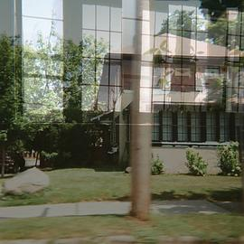

《战斗吧，蝗虫博士！：昆虫学家的撒哈拉历险》

总体观点
《战斗吧，蝗虫博士！》是一部彻底打破科学研究枯燥严肃刻板印象的神作。京都大学博士毕业后沦为“无固定教职、无经费、无女友”的三无青年学者前野，为了实现儿时“被遮天蔽日蝗虫吃掉”的奇葩梦想，毅然怀揣单程机票只身杀向西非毛里塔尼亚的撒哈拉腹地，投身抵抗肆虐数十个国家沙漠蝗灾的第一线。
全书以近乎漫才喜剧般的爆笑笔调，记录了他在五十度沙漠酷暑中穿上当地白袍、学会徒手捉毒蛇巨蜥、全身涂满绿色装成植物试图被蝗虫啃咬的荒诞历险。笑声背后，是一部极为硬核的昆虫生理生态学科研史：前野在极端恶劣环境下，历经数年终于揭示了沙漠蝗虫从孤独温顺的“散居型”突变为狂暴贪食的“群居型”的体色与性成熟控制机制，展现出纯粹科学探索直面饥荒拯救人类的崇高热血。
核心观点
-
1. 狂热好奇心：推动科学突破最原始的纯粹引擎
真正的重大科研发现往往不源于功利的考评指标，而源于学者对未知自然界近乎走火入魔的痴迷与不计利害的冒险本能。
前野自幼痴迷昆虫，为了亲身体验群居型沙漠蝗虫的撕咬力，在撒哈拉沙漠脱掉上衣任由数百只狂暴蝗虫在身上爬行啃咬实验。 -
2. 沙漠蝗虫的双相相变机制：自然界的变身魔术
沙漠蝗在低密度散居状态下是翠绿、害羞且无害的昆虫；一旦种群密度暴增发生身体物理摩擦，就会在几小时内黑化变身，分泌聚集信息素聚集成遮天蔽日的食人巨兽。
书中详细解析散居型成虫触角与后腿上的机械感受器如何被同伴频繁触碰，触发神经系统剧烈释放五羟色胺导致行为彻底狂暴化。 -
3. 田野科研的真谛：入乡随俗与跨文化同盟
孤身一人的外国学者要在异乡蛮荒荒漠立足，必须放下傲慢、换上当地传统白袍、虔诚融入当地游牧部落，与当地科研人员结下生死友谊。
前野在毛里塔尼亚被当地科研所所长收为义子，被赐予尊贵的部落名字“乌鲁德（浩太郎之子）”，从而获得深入军事禁区追踪蝗灾的通行特权。 -
4. 科学家的至暗时刻：与贫穷、失败和不可预测的自然博弈
沙漠蝗灾爆发完全依赖不可捉摸的偶发降雨，前野在沙漠风餐露宿数月却常常找不到一只蝗虫，面临科研经费耗尽与即将失业回国啃老的人生悬崖。
在连续数月没有论文产出的绝望中，前野在帐篷里吃着混杂黄沙的面包，依然咬牙坚持夜间在沙丘上架设计数灯诱捕夜行成虫。 -
5. 从荒诞搞怪到守护数亿人的粮食安全
沙漠蝗虫一次迁飞足以毁灭数百万公顷农田导致非洲大饥荒；弄清其产卵越冬与性成熟规律，能够让防蝗部门在蝗群起飞前实现精准绿色生物防治。
前野的科研成果最终登上顶级国际昆虫学期刊封面，为联合国粮农组织（FAO）早期预警沙漠蝗灾提供了至关重要的实地生物学参数。
全书思维导图 · 知识脉络树
全书结构
-
第一章：无职博士的豪赌与单程机票
京都大学昆虫学博士毕业面临学术断崖：没有大学正式教职、科研经费告罄；毅然申请日本学术振兴会海外特别研究员，单枪匹马飞赴西非毛里塔尼亚。
描写带着仅有的积蓄降落在努瓦克肖特风沙机场，不懂法语和阿拉伯语的前野在异国他乡迈出科研孤注一掷的第一步。 -
第二章：成为“乌鲁德”——融入撒哈拉部落
在毛里塔尼亚国家防蝗中心寻找立足点；克服酷暑、寄生虫与腹泻，穿上防沙大白袍，与当地向导结盟，正式获得“乌鲁德浩太郎”的尊号。
在烈日下学习用手抓羊肉抓饭的生存技能，学会用三杯极浓极甜的薄荷绿茶在荒漠营地与贝都因游牧向导建立深厚信任。 -
第三章：撒哈拉沙漠大搜寻与狂人实验
深入撒哈拉腹地追踪野生沙漠蝗虫种群；遭遇沙漠毒蝎咬伤与沙尘暴围困；为了测试蝗虫攻击性，进行令人啼笑皆非的“人体绿色伪装实验”。
前野全身穿上从日本带去的绿色连体服，在四十度沙丘上扮演一株巨大绿色多肉植物，静候蝗群飞落咬食的滑稽科研现场。 -
第四章：相变密码破译与顶级论文反击
在简陋的沙漠实验室里通宵达旦解剖数千只蝗虫生殖腺与色素沉淀；终于在交配行为、信息素释放与体型演变上取得重大突破，斩获顶级期刊认可。
显微镜下捕捉到群居型雌性蝗虫卵巢发育抑制因子的关键生理指标，在简陋帐篷里通过卫星电话向导师大声狂呼“我做到了”。 -
第五章：科学狂人的归途与守护誓言
科研合同期满载誉回国，成功获得日本国立农业环境技术研究所教职；回望撒哈拉漫漫黄沙，宣告为人类消除蝗灾饥荒奋斗终生的崇高誓言。
全书在幽默狂放的告别词中谢幕：只要非洲大地上还有一只沙漠蝗虫在振翅，绿巨侠蝗虫博士就绝不脱下他心爱的白袍战斗铠甲。